Descriptive statistics
This report tracks down the creation of graphs for basic descriptive statistics in the NLSY97 religiosity data as defined by the extract NLSY97_Religiosity_20042014.
First we load the data, specifically the dataset dsL, obtained by the report Derive_dsL_from_Extract.
Figure 1 : View of the initial dsL dataset

The view shows all the measurements taken from one individual (id=1) for the selected variables (columns). All datasets for modeling are derived by subsetting the columns of this one. However, it's easier to see the overall data layout with expressing dsL as a slice of Cattell's databox, showing variables across occasions.
Figure 2 : dsL re-expressed as a Cattell's datacube slice
 Observed that this view is obtained by transposing the columns in Figure 1, except for year, which values are used as symbols for intersections of variales and occasions.
Observed that this view is obtained by transposing the columns in Figure 1, except for year, which values are used as symbols for intersections of variales and occasions.
The following plots are organized into an interactive display


Error: object 'attlevels' not found


 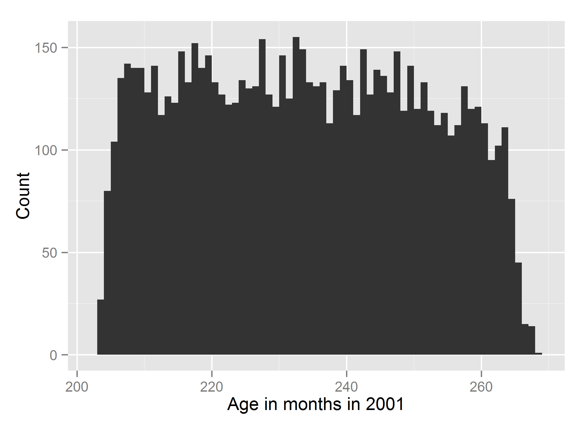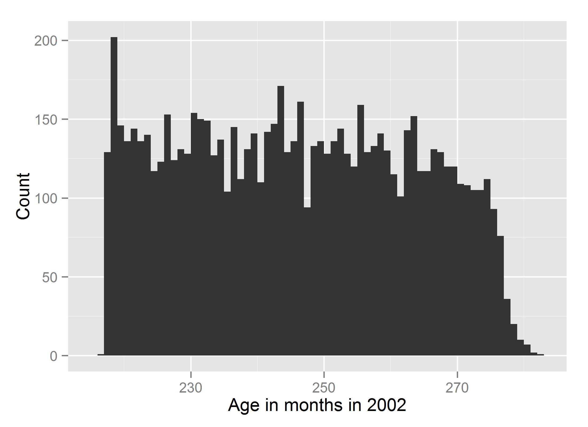
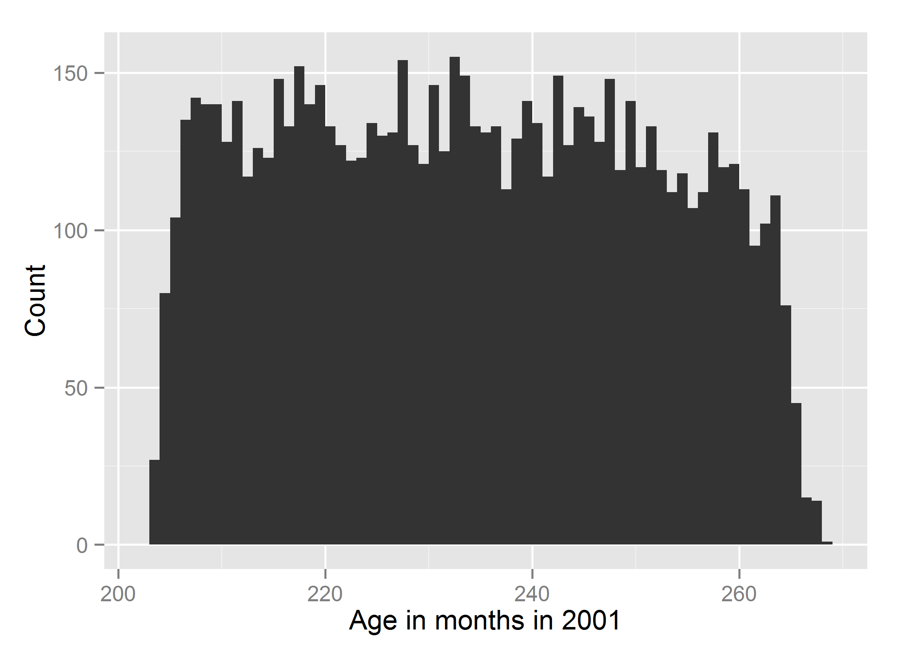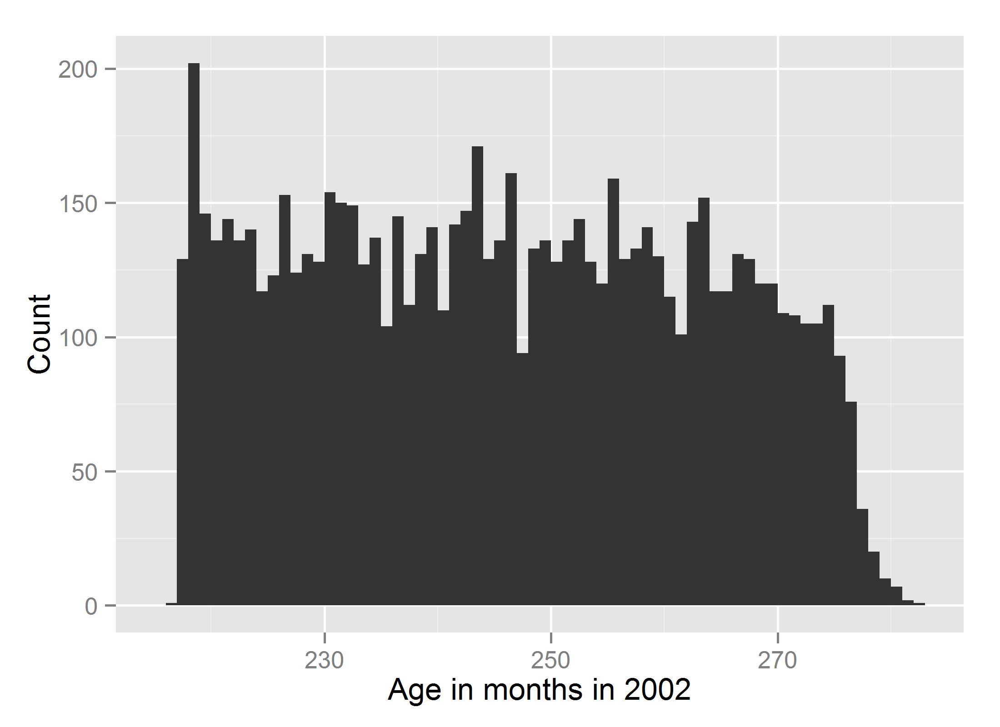
Warning: cannot create file
'C:/Users/inspirion/Documents/GitHub/Longitudinal_Models_of_Religiosity_NLSY92003/Models/Descriptives/figure_rmd/agemon2003.png',
reason 'No such file or directory'
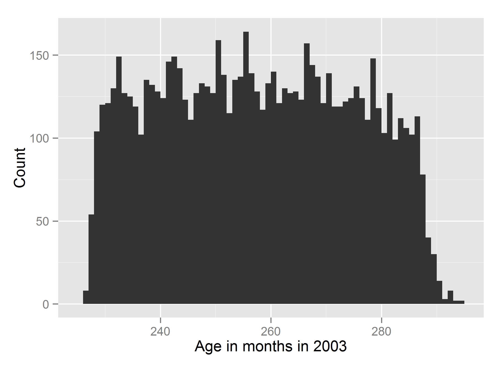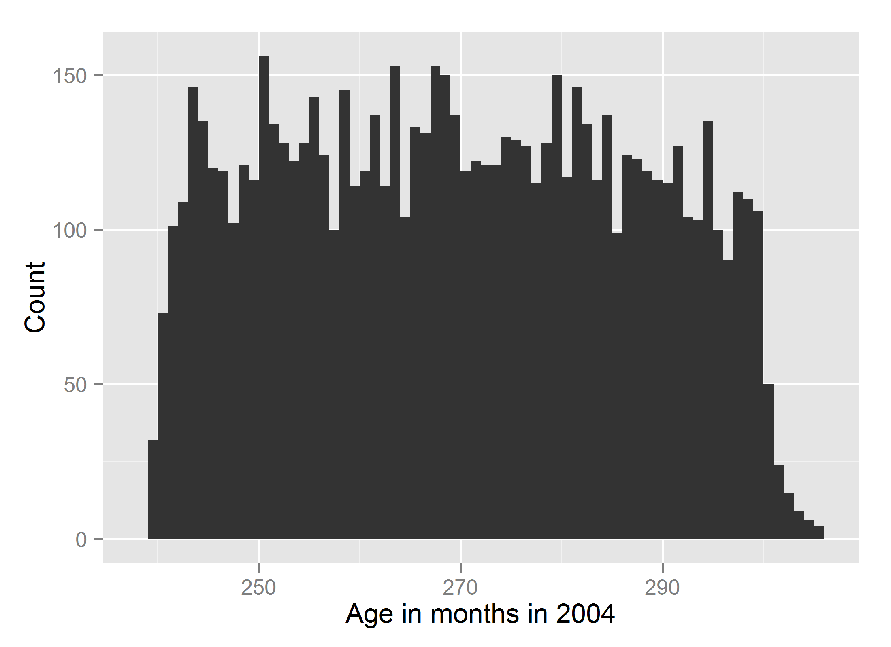
Warning: cannot create file
'C:/Users/inspirion/Documents/GitHub/Longitudinal_Models_of_Religiosity_NLSY20057/Models/Descriptives/figure_rmd/agemon2005.png',
reason 'No such file or directory'
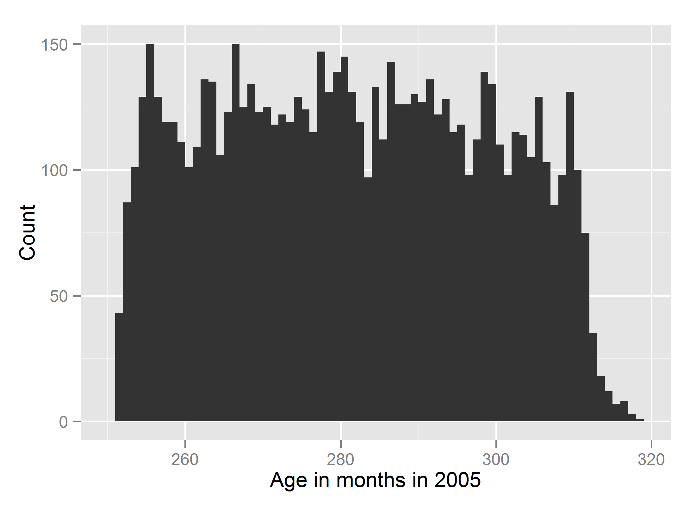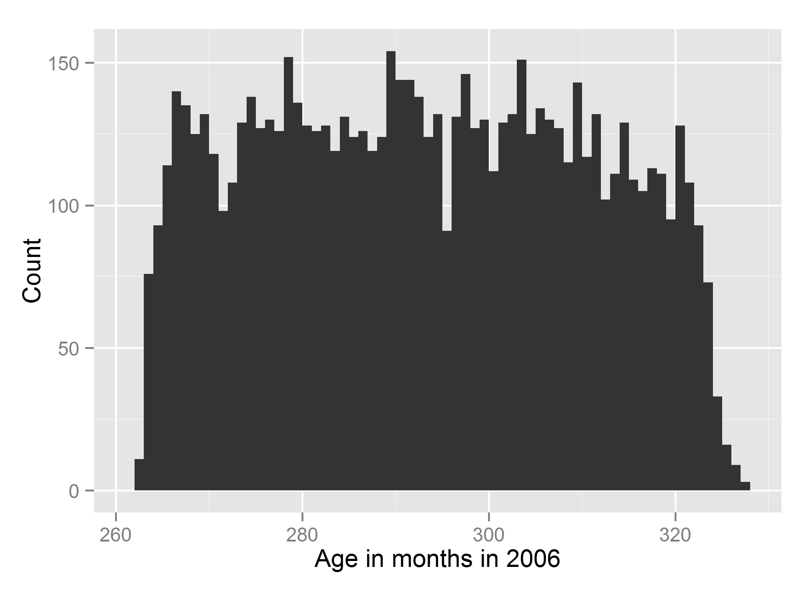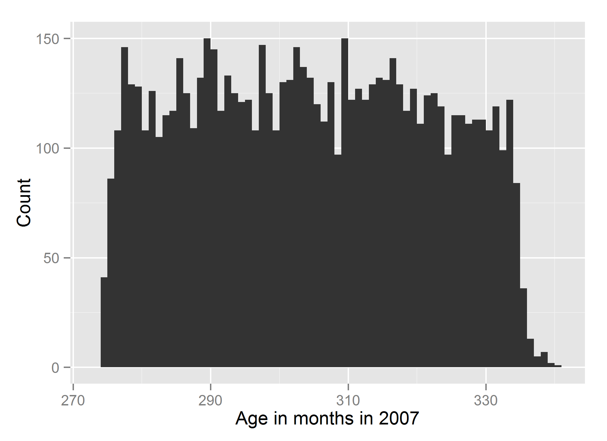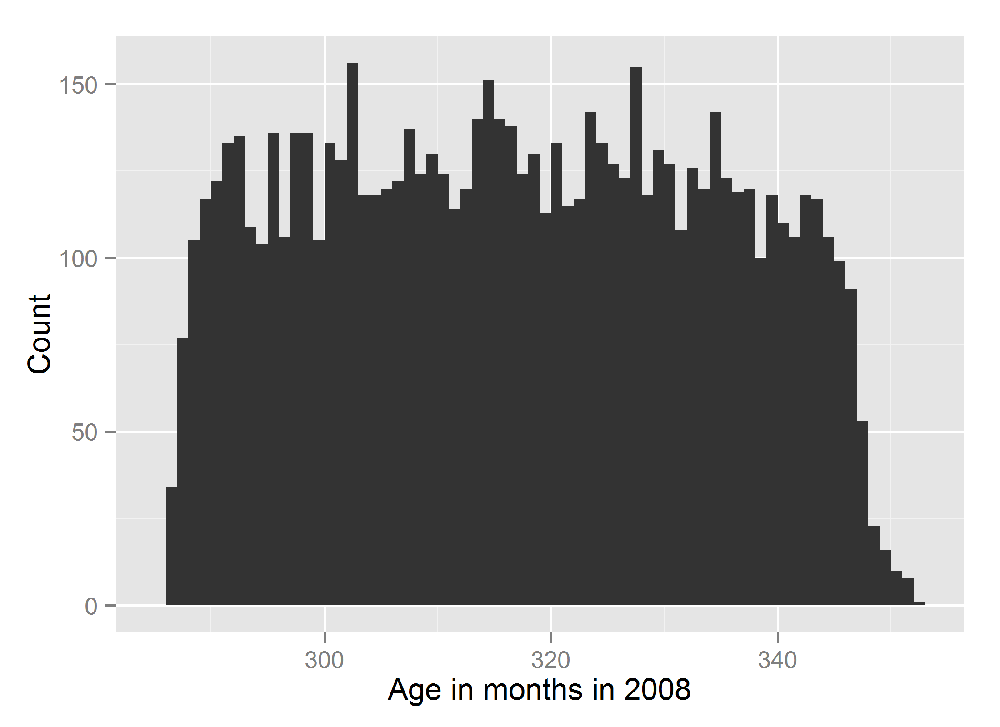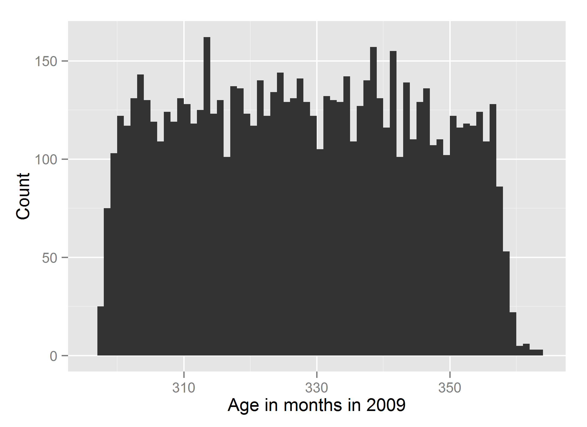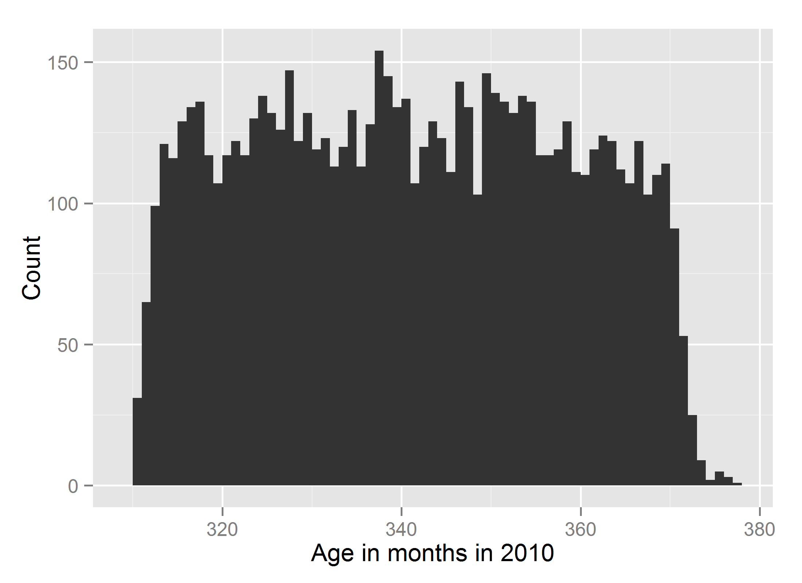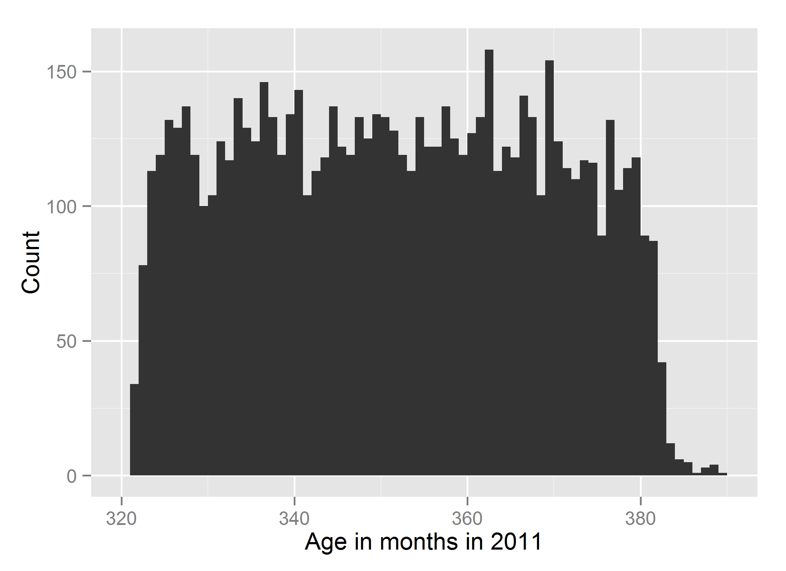


Error: 'x' and 'units' must have length > 0